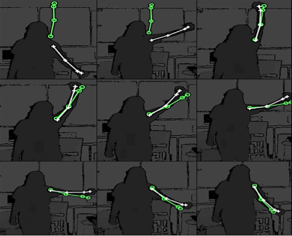
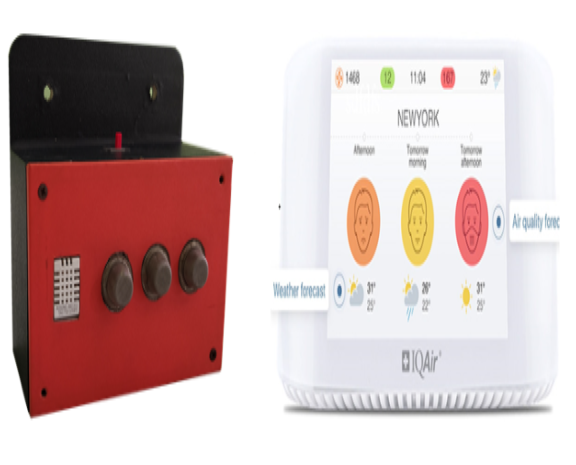
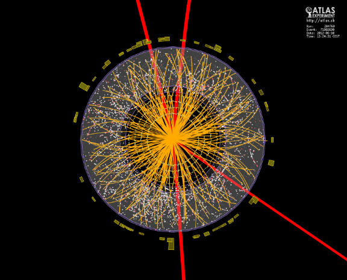

Current Research Projects
HUMAN ACTIVITY RECOGNITION

This ICT Division and IUB funded project intends to create a wearable sensor that will be able to measure movement of different body parts. Once the device is ready, we intend to use this device on people seeking rehabilitation support at the CRP (https://www.crp-bangladesh.org/). Our research intention is to record movement data while the rehabilitation process occurs. During the same exercise we intend to collect visual data of the patient performing, using 3D sensors. Finally, we intend to use time series data analysis to learn the activity, measure (or grade) the performance of patient, level of improvement, identify the areas and time when patient is facing difficulty. This all should be done automatically or semi-automatically.
E-TRAFFIC STATISTICAL MODELING OF TRAFFIC CONGESTION IN DHAKA

Statistical modeling of traffic congestion in Dhaka. This proposal aims to build a web-based/mobile-based framework that can estimate the severity of congestion in any intersection using the statistical traffic congestion model that is learned from past time-series data. If we can statistically learn the traffic congestion for a significant number of days, we can use the learned-model in addition to real-time traffic congestion (google maps) to suggest the user about possible congestion along his/her travel-route at certain time of a regular day.
DECIPHERING OF BIO-ELECTROCHEMICAL ACTIVITIES GENERATED DURING ARGON PLASMA JET DEFORMATION OF BACTERIA CELL MORPHOLOGY USING MACHINE LEARNING
This project utilizes and explores the potential use of machine learning techniques to predict the activities during an experiment of bacterial-cell inactivation using argon-plasma-jet. Our experiments have confirmed that argon-plasma-jet can be used for bacterial cell deformation or killing microorganisms. A targeted high-energy low-temperature argon-plasma-jet is projected on microorganisms and it completely destroys those organisms. There are more than 250 known and unknown chemical reactions occuring during that process depending on different operating conditions. Beside these, high local-electric-field and photons coming out from the jet front also active at the same time. Experimentally, it is quite impossible to track the synergic effect of plasma species and the jets electric field on the cell. This proposed work is the initial step to understand and predict this bio-electrochemical process through computer simulation, to have a better control on the jet-surface interaction process, and its further application. We will do the electro dynamic modelling of the plasma jet using differential machine learning modeling technique. This project is collaborated with Kanazawa university Japan.
IDENTIFYING HABITABLE PLANETS FROM 21 CM TELESCOPE DATA USING MACHINE LEARNING
Modern astronomers together with engineers have built large array of radio telescopes to look for faint signals generated billions of years back buried in big chaotic datasets, like a needle in a haystack. The contributors of noise in those signals range from humans to all celestial events happening in the path the signal is traveling. To be able to extract a signal successfully, they need to first simulate the complete pipeline of an observation so that each element within the pipeline can be understood and taken care of separately. It used to be dose based on some predefined models developed by astrophysicists, however in recent times the amount and scope of data accumulated by these telescopes have increased exponentially in amount. In this project we intend to develop or modify existing techniques of noise removal in radio telescope signals, specially 21-cm signals using various machine learning and deep learning techniques. This project is collaborated with South African Radio Astronomy Observatory and Low Frequency Array (LOFAR) telescope.
REALTIME AIR QUALITY MONITORING AND POLLUTION MODELING FROM IOT DEVICE

This ICT Division, Bangladesh, funded project intends to deploy 100+ inhouse IoT air quality monitoring devices in five different locations of dhaka city to record the level of PM2.5, CO, CO2, flammable gas. Based on the data collected an air pollution model will be developed for the Department of Environment of People's republic of Bangladesh Government. The objective of the system is to provide real time dynamic visualization of pollution trends and forecasting. Moreover, the model should also be able to identify sources and causes of pollution. This project is collaborated with Department of Environment Bangladesh government.
GEOSPATIAL ANALYSIS AND SEGMENTATION OF REMOTE SENSING AND AERIAL IMAGERY USING DEEP LEARNING
This IUB funded projects primary goal is to create a standard dataset for Dhaka City that contains satellite images with manual labeling of different type of buildups. Then based on this dataset, we intend to create a deep learning model that will bale to automatically classify the type of build up each location has, if a satellite image is provided. The build up that is under consideration is: buildings, roads, fields, greenery, waterbody. The system should also be able to provide visual and quantifiable representation of loss of greenery and water bodies due to urban expansion.
ANALYSIS OF CERN'S VERY LARGE PARTICLE DATA USING MACHINE LEARNING

This is the first initiative from Bangladesh to join CERN to work on their very large particle data. This project is jointly funded by ICT Division, Bangladesh and IUB. The primary goal of this project is to establish communication and technical knowledge sharing regarding the petabyte level data acquired from the large hadron collider. We intend to use our expertise in machine learning and deep learning on this very large datasets. This project is collaborated with CERN.
BANGLA LANGUAGE CORPUS CREATION
This IUB funded project aims to create a Bangla language corpus. Currently there are 700,000 articles are included in this corpus and increasing. Based on this corpus we are working improving bangle word embedding issue. This word embedding are vector representations of word that allow machines to learn semantic and syntactic meanings by performing computations on them. Two well known embedding models are CBOW and Skipgram. Different methods proposed to evaluate the quality of embedding are categorized into extrinsic and intrinsic evaluation methods. This research will focuses on intrinsic evaluation of the evaluation of the models on tasks, such as analogy prediction, semantic relatedness, synonym detection, antonym detection and concept categorization.
MEDICAL PILL IMAGE AND VIDEO DATASET CREATION
This ICT Division, Bangladesh funded project focuses on creating an annotated database of images and videos of all medicine available in Bangladesh. After the database is available a deep learning model will be used to detect pills in an images or video. Ones the pill is detected next task is to identify the pill using deep learning and computer vision techniques. Based on this understanding a mobile application will be created that will be able to confirm visually impared individuals or elderly patients with short-term memory loss what medicine they are taking.
A COMPARATIVE STUDY ON DISASTER DETECTION FROM SOCIAL MEDIA IMAGES USING DEEP LEARNING

The primary objective of this ICT Division, Bangladesh project is to create an annotated database containing images or videos of different types of disasters. Once the database is created this data will be used to train a deep learning module that will be able to identify what disaster is happening given an image. We intend to also improve further finetune the classification to detect the degree of severity of a disaster. Intended final product is to build a system for the ministry of Disaster management and relief that will be able to inform appropriate authority the location, type and severity of a disaster.
HIGH SPEED DETECTION OF OPTICAL DISC IN RETINAL FUNDUS IMAGE
The first task in any retinal fundus image processing is to detect the optical disk, as this is the prime location in a fundus image from where all the retinal blood vessels originate. In this paper, a faster method to detect retinal optical disk is proposed that uses mean intensity value of retinal image to detect the center of optical disc, which can be used in retinal image based person authentication system or retinal disease diagnosis. A candidate based approach on the green channel of an RGB fundus image is used to detect optical disc center location. The system has been successfully tested on several publicly available standard databases, namely: DRIVE, MESSIDOR, VARIA, VICAVR and DIARETDB_01 and produced 97.5%, 97.8%, 94%, 93.1% and 86.5% accuracies respectively. It is observed that, if lower recognition accuracy is accepted (from 100% to 97.5%) on DRIVE database, the detection speed increases from 7 seconds to 2 seconds per image, which is faster than any other previous methods with such high accuracies.
DERMATOLOGICAL DISEASE DIAGNOSIS USING COLOR SKIN IMAGES
This project is a machine intervention in medical diagnostics. Etymologically, dermatology is the medical discipline of analysis and treatment of skin anomalies. The system presented is a machine intervention in contrast to human arbitration into the conventional medical personnel based ideology of dermatological diagnosis. The system works on two dependent steps - the first detects skin anomalies and the latter identifies the diseases. The system operates on visual input i.e. high resolution color images and patient history. In terms of machine intervention, the system uses color image processing techniques, k-means clustering and color gradient techniques to identify the diseased skin. For disease classification, the system resorts to feedforward backpropagation artificial neural networks. The system exhibits a diseased skin detection accuracy of 95.99% and disease identification accuracy of 94.016% while tested for a total of 2055 diseased areas in 704 skin images for 6 diseases.
AGE GROUP RECOGNITION FROM FACIAL IMAGE
Because existing face recognition systems lack required accuracy when viewpoint, illumination, expression, occlusion, accessories and so on vary considerably, continued research in this field of biometrics is a challenging objective. It is widely accepted that local features in face images are more robust against such distortions and a spatial-frequency analysis is often more desirable to extract such features. Having good characteristics of space-frequency localization, wavelet analysis is the right choice for this purpose. Among various wavelet bases Gabor functions provide optimized resolution in both spatial and frequency domains. However, only the magnitudes of the Gabor coefficients are used as features for face recognition in most previous works, while the Gabor phases are deemed useless and ignored. But recently researchers are finding impressive results using Gabor phase based feature representations. At the earlier part of this project, we study the characteristics of the phase part of the Gabor wavelet by investigating on 70 different Gabor phase based feature extraction techniques for face recognition. Later, based on the observation, we propose a novel face recognition system using the discriminating capability of the basic 40 Gabor filters. Lastly, we propose two online systems for face verification and identification based on local and global threshold of the similarity measure. Experimental results show that, among the 40 basic Gabor-phase based feature representations, filter responses acquired from larger scales show higher discriminating ability for face recognition. Moreover, our proposed weighted vote based face recognition system shows high accuracy of 98.3% for 1000 subjects for a combination of the FERET, Indian and in-house databases on all three different similarity measures, outperforming the recognition accuracy 83.2% of conventional Gabor phase representation. Finally, the proposed face authentication method based on the 40 basic Gabor phase feature representation and the summation of the 40 basic Gabor phase feature representation show promising results, for images taken under unconstrained pose, illumination and expression changes. As a whole, this project studies different aspects of Gabor wavelet based human face recognition and proposes some novel methods for improved face classification.
LEAF SHAPE IDENTIFICATION BASED PLANT BIOMETRICS
This paper presents a simple and computationally efficient method for plant species
recognition using leaf image. This method works only for the plants with broad flat leaves
which are more or less two dimensional in nature. The method consists of five major parts.
First, images of leaf are acquired with digital camera or scanners. Then the user selects the
base point of the leaf and a few reference points on the leaf blades. Based on these points
the leaf shape is extracted from the background and a binary image is produced. After that
the leaf is aligned horizontally with its base point on the left of the image. Then several
morphological features, such as eccentricity, area, perimeter, major axis, minor axis,
equivalent diameter, convex area and extent, are extracted. A unique set of features are
extracted from the leaves by slicing across the major axis and parallel to the minor axis.
Then the feature pointes are normalized by taking the ratio of the slice lengths and leaf
lengths (major axis). These features are used as inputs to the probabilistic neural network.
The network was trained with 1200 simple leaves from 30 plant species. The proposed method
has been tested using 10-fold cross-validation technique and the system's average recognition
accuracy is 91.41%.
DUAL IRIS BASED HUMAN IDENTIFICATION SYSTEM
This system uses the distinctive human iris patterns to successfully identify authorized individuals. It detects the iris region from the eye image and then isolates the region and extracts useful features from it. It divides the selected iris region into pixels following a preset radial and angular and then maps the circular region into rectangular polar coordinate according to the resolutions. This polar image is then convolved with 1D log Gabor filter and phase of the response is quantized to four levels to generate the binary iris template and its corresponding mask. The Hamming distance between two iris templates is computed to find out if the templates are generated from the same iris or not. The conventional systems measure the Hamming Distance using iris images from a single eye. However, the proposed system takes images from both eyes simultaneously for comparison process which shows an increased accuracy and performance by eliminating the false acceptance (acceptance of intruders) and minimizing the false rejection (rejection of authorized personnel).